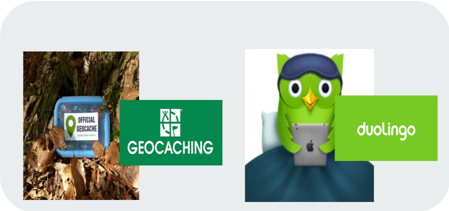

Project description
Ariane has the purpose to improve and complete the French government services with the aim of reinforcing the security of French people travelling abroad.
In order to accomplish this, the tourism sector is used as a way to collect data which will be transfered to the foreign ministry.
Indeed, Ariane project is an application which can geolocate French citizens and prevent them from possible risks in the country by communicating all necessary information and useful contacts if problems occur.
This project represents a huge opportunity as an STD (Suivi de la Demande Touristique) survey in 2016 showed that 26 483 thousands of travels abroad have been done by French people.
Stakeholder interest
- French government
- Ensure French citizens' security abroad
- Reduce administrative process for the French government
- Digital transition of the Ariane program
- Insurance companies
- Adapt the insurance offer
- Personalize services
- French citizens
- Being informed instantly (emergency phone numbers, specific events...)
- To feel safe
User experience
This project is inspired by 2 use cases, Duolingo and Geocashing:
- Geocashing is an application that allows users to participate to treasure hunting depending on their geolocation
- Duolingo is an application with the purpose for the user to practice different languages with a system of rewards
Social network function
A function only dedicated to the users and encouraging them to exchange around 4 themes: outdoor activities, transport, restaurant, tourism. Inside of each of these sections, the user will find a place to exchange. This option was created in order for the French community to help each other.
Location based information
Each traveller will have a personalized feed according to his geolocation. He will, therefore, receive information to reinforce his feeling of security if a crisis is occuring in the country for example.
Gamification of the app
A content with some point of touristic interests to visit will be available. Then, if they want, users can add content by integrating in the app a new point of interest and could even create playful courses rated by the community.
A difficulty level added to a description is set up for each new playful courses created by a user. A user could level up after having visited other points of interest of another user and completed with a ranking system will be available for the users in the geographical range concerned.